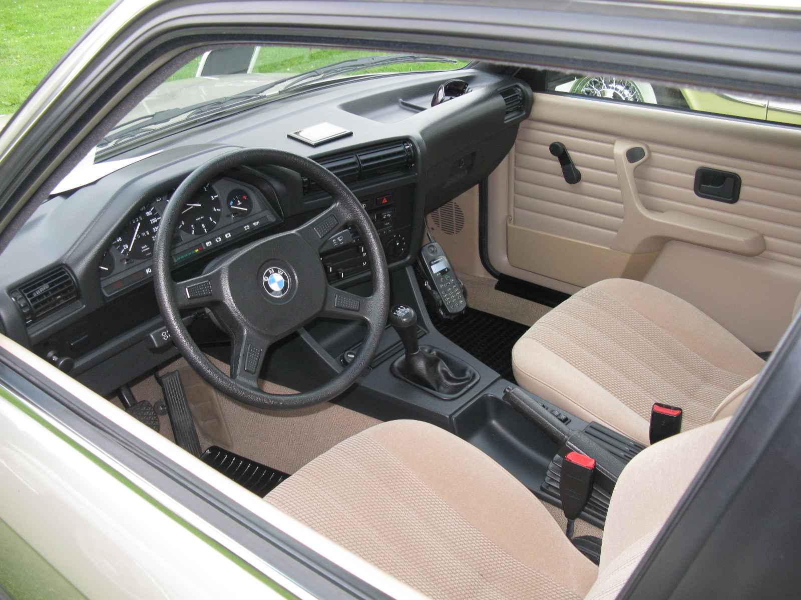
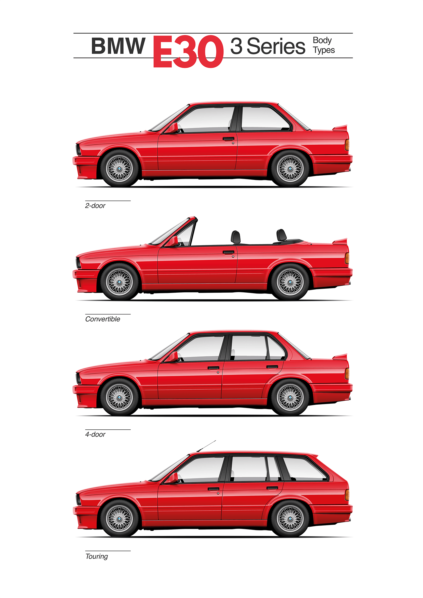

A doua generație (E30; 1982)
BMW E30 este a doua generație a BMW Seria 3, care a fost produsă din 1982 până în 1994 și a înlocuit seria 3 E21. Gama de modele a inclus modele coupe cu 2 uși și modele decapotabile, precum și a fost prima serie 3 care a fost produsă în modele sedan cu 4 uși și modele de caroserie wagon/estate.
A fost propulsat de motoare cu patru cilindri pe benzină, șase cilindri pe benzină și șase cilindri diesel, acesta din urmă fiind primul pentru Seria 3. Modelul E30 325iX a fost primul BMW care a avut tracțiune integrală.
Primul model BMW M3 a fost construit pe platforma E30 și a fost propulsat de motorul pe benzină cu patru cilindri BMW S14 de turație mare, care a produs 175 kW (235 CP) în iterația sa finală. BMW Z1 roadster a fost, de asemenea, bazat pe platforma E30. În urma lansării seriei E36 3 în 1990, E30 a început să fie eliminat treptat.
Dezvoltarea
Dezvoltarea seriei 3 E30 a început în iulie 1976, cu un stil dezvoltat sub designerul șef Claus Luthe, cu un stil exterior condus de Boyke Boyer. În 1978, proiectul final a fost aprobat, iar procesul de înghețare a proiectului (procesul de cubare) a fost finalizat în 1979. Filmul de lansare al BMW pentru E30 prezintă procesul de proiectare, inclusiv proiectarea asistată de calculator (CAD), testarea la impact și testarea tunelului eolian. Mașina a fost lansată la sfârșitul lunii noiembrie 1982.
Extern, aspectul E30 este foarte similar cu versiunile cu faruri gemene ale predecesorului său E21, cu toate acestea, Există diferite modificări de detaliu în stilul E30. Diferențele majore față de E21 includ interiorul și o suspensie revizuită, aceasta din urmă pentru a reduce supravirarea pentru care E21 a fost criticat.
În 1985 au fost actualizate finisajele exterioare și interioare. Modelul 323i a fost înlocuit cu 325i în acest moment și a fost introdus modelul 324d cu motor diesel. Un model decapotabil din fabrică a intrat în gama de modele. Cu toate acestea, Baur a rămas în vânzare, alături de decapotabilul de fabrică. M3 Cabriolet a fost oferit doar pentru piața europeană.
La Salonul Auto de la Frankfurt din septembrie 1987, BMW a introdus o actualizare majoră a modelului E30 (adesea numit seria 2). Modificările aduse gamei au fost adăugarea variantei Touring (station wagon) și eliminarea modelului 325e. Modelele actualizate în 1987 au rămas în mare parte neschimbate până la sfârșitul producției, cu adăugarea modelului 318is în 1989.
Modificările de stil extern au inclus lumini spate reproiectate, bara de protecție față și o reducere a cantității de finisaje cromate. Motorul cu patru cilindri a fost modernizat de la BMW M10 la BMW M40 și au fost făcute diverse alte modificări mecanice. Protecția împotriva ruginii a fost îmbunătățită odată cu actualizarea.
Stiluri de caroserie
Pe lângă modelele de sedan cu două uși și Baur decapotabile ale predecesorului său E21, E30 a devenit mai târziu disponibil și ca sedan cu patru uși și break cu cinci uși (comercializat sub numele de "Touring").
Stilul de caroserie Touring a început viața ca un prototip construit de inginerul BMW Max Reisböck în garajul prietenului său în 1984 și a început producția în 1987. Versiunea decapotabilă din fabrică a început producția în 1985, conversiile decapotabile Baur rămânând disponibile alături de aceasta.
Suspensia
Una dintre caracteristicile care s-au adăugat spațiului E30 a fost suspensia. Suporturile MacPherson din față și suspensia brațului semi-trailing din spate au fost un aranjament compact care a lăsat mult spațiu în cabină și portbagaj pentru dimensiunea generală a mașinii.
Brațele semi-trailing au fost criticate pentru schimbările dinamice ale unghiului de fugă și ale camberului implicite geometriei suspensiei, provocând subvirajul în situații de viraje dure (cum ar fi cursele și autocross-ul). Cu toate acestea, recenzorii au lăudat manevrabilitatea E30.
Frânele
Pentru roțile din față, toate modelele folosesc frâne cu disc. Modelele timpurii 316/318 au discuri solide, în timp ce toate modelele ulterioare au discuri ventilate. Pentru roțile din spate, majoritatea modelelor folosesc frâne cu disc solid, cu excepția unor modele timpurii: modelele cu 4 cilindrii și 6 cilindrii care folosesc frâne cu tambur. Sistemul de frânare ABS a devenit disponibil în 1986.
Producția
E30 a fost produs în Munchen, Germania; Regensburg, Germania; și Rosslyn, Africa de Sud. Producția de serie a început în octombrie 1982.
Producția modelului E30 a început să se încheie în 1990, datorită introducerii modelelor Seria 3 E36. Producția de Sedan s-a încheiat la 30 aprilie 1991, la Regensburg. Alte variante au fost eliminate treptat, până când modelul final E30, un Touring, a fost produs în 1994 și vândut ca model 1995.